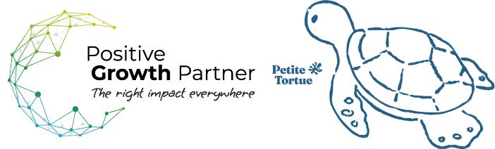

Proposition d’accompagnement en deux temps : Structuration – Test marché
Quatre tendances de fond qui jouent en faveur de la vaisselle biosourcée pour enfants en Europe.
Le marché européen de la vaisselle biodégradable pèse ≈ 3,8 Md$ en 2025 et vise 6,9 Md$ en 2032 (≈ +8,9 %/an). L’Europe est la 1ʳᵉ région mondiale du secteur, portée par la réglementation anti-plastique et des consommateurs exigeants.
Depuis le 20 janvier 2025, le Règlement (UE) 2024/3190 interdit le BPA et les bisphénols dangereux dans tous les matériaux au contact des aliments. La vaisselle 100% biosourcée de Petite Tortue est déjà conforme — un avantage concurrentiel direct.
Environ 70 % des parents européens privilégient le bio et le naturel pour leurs enfants. La sensibilisation aux perturbateurs endocriniens et aux microplastiques transforme l’acte d’achat puériculture : santé de l’enfant d’abord, prix ensuite.
Directive plastiques à usage unique, objectifs d’économie circulaire de l’UE, distributeurs qui déplastifient leurs rayons : les matériaux biosourcés passent du statut de niche à celui de référence, ouvrant les portes des enseignes bio et des pharmacies.
Alors que les industriels du plastique doivent reformuler sous la pression réglementaire (BPA, bisphénols), Petite Tortue part de l’avance : 0% pétrole, 0% additifs chimiques, aucun effort de conformité à anticiper.
C’est un argument de vente immédiat face aux distributeurs : un produit qui incarne la norme de demain, disponible aujourd’hui.
Sur les marchés voisins (Belgique, Allemagne, Suisse), le made in France est un signal de qualité et de traçabilité valorisé, surtout en puériculture.
Face aux vaisselles pour enfants produites en Asie, Petite Tortue raconte une histoire courte et saine : matière biosourcée, fabrication française, logistique européenne rapide et bas-carbone.
Marché bio et puériculture denses, faible barrière linguistique, proximité logistique immédiate. Grandes enseignes bio structurées et consommateurs francophones réceptifs au made in France.
Premier marché européen de la vaisselle biodégradable (≈ 9 % du marché européen) et population très sensible aux perturbateurs endocriniens. Le consommateur allemand paie un premium pour la santé des enfants et la durabilité.
Engagement : durée, volume de travail et budget à définir ensemble.
Rythme : un point bi-mensuel, livrables écrits partagés.